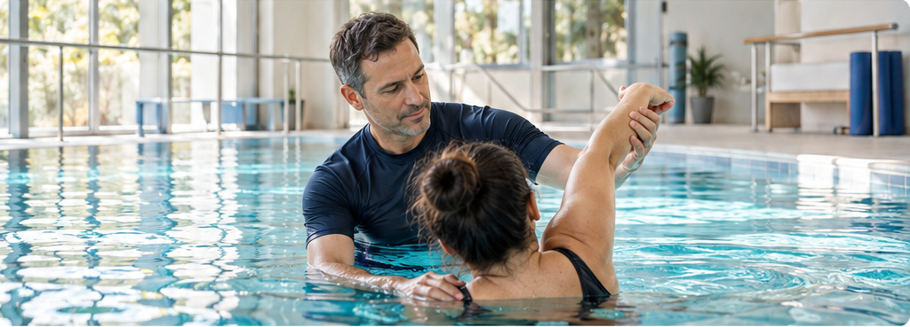

הקשבה
להתחיל במה שחשוב לכם, להשאיר מקום לשאלות ולהכיר את התחושות והציפיות שלכם.
מאחורי כל תהליך יש אדם, הקשבה ודרך אישית.
הבחירה להתחיל טיפול מלווה לפעמים בשאלות. אנחנו מאמינים שהצעד הראשון הוא שיחה, שבה אפשר לספר מה מביא אתכם, לשאול ולהכיר את התהליך.
בגישה שמעמידה את האדם במרכז, בודקים יחד את הצרכים, הציפיות וההתאמה לטיפול במים, לפני שמתחילים.
[כאן יושלמו ההכשרה, הניסיון המקצועי והגישה הטיפולית, לפי מידע אמיתי מהקליניקה.]

להתחיל במה שחשוב לכם, להשאיר מקום לשאלות ולהכיר את התחושות והציפיות שלכם.
לבחון יחד את הצרכים ואת ההתאמה, ולהגדיר את המשך הדרך בשיחה עם המטפל.
להתקדם מתוך תקשורת פתוחה, תשומת לב ונוחות ככל האפשר לאורך המפגש.
נשמח להכיר ולבדוק יחד מה מתאים לכם.